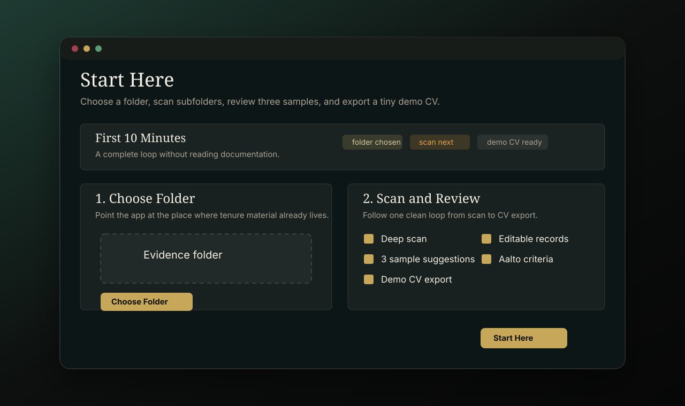
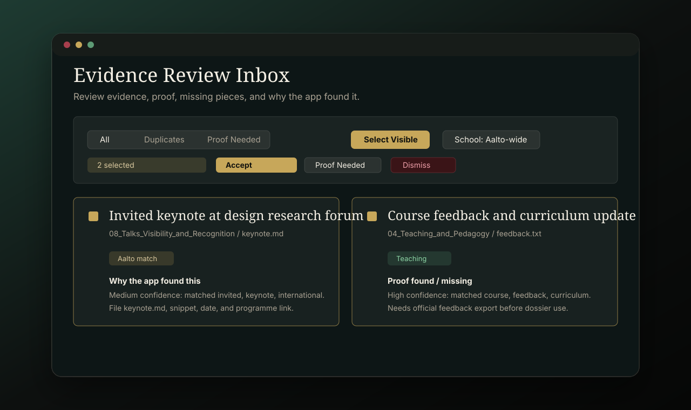
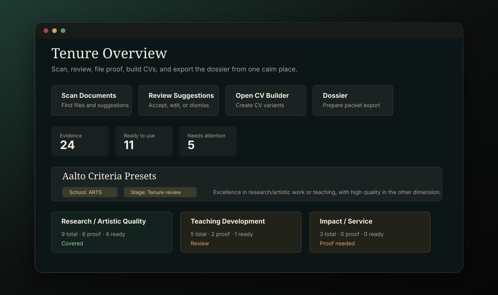
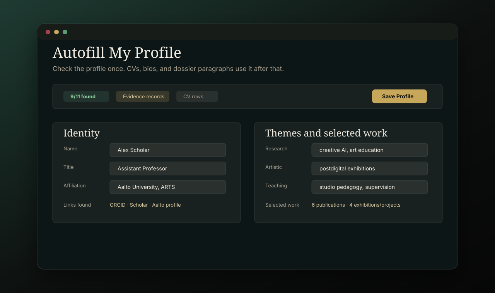
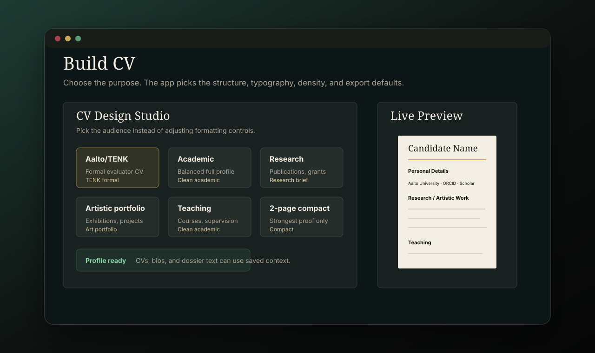
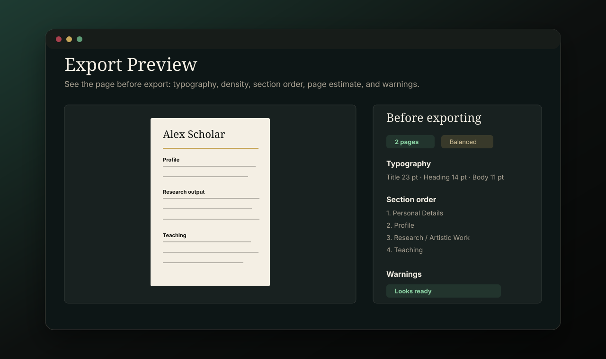
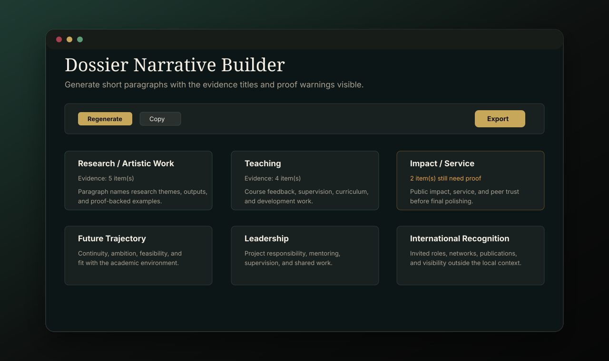

Documentation
Use Proofessor as a private review desk: collect material, scan it, review suggestions, then build CV and dossier outputs from confirmed evidence.
Get Started
- Install the app and open it.
- Use Start Here.
- Choose one folder that contains tenure material.
- Run the deep scan across folders and subfolders.
- Review three sample suggestions to understand the workflow.
- Export the tiny demo CV to see the endpoint.

Sign The App
- Download the source package and open
TenureEvidenceApp/Proofessor.xcodeprojin Xcode. - Select the Proofessor target.
- Open Signing & Capabilities.
- Choose your Apple Developer team and keep Hardened Runtime enabled for public distribution.
- Archive or export from Xcode, or use the included notarization script after your Developer ID certificate is installed.
Review Suggestions
- Select one or more suggestions.
- Choose the Aalto school and career stage lens.
- Read the Aalto dimension, confidence, why suggested, proof found, and missing pieces.
- Check why the app found it: exact file, folder, date, text snippet, and source link.
- Accept, edit, dismiss, merge duplicates, or mark proof needed.

Build Evidence
- Open Verify & File to inspect a record.
- Use the review queue to see what the scan found and why it matters.
- Edit source details or notes only when needed.
- Attach proof, archive URLs, and mark the record ready to use.
Track Criteria
The overview shows Aalto-style coverage across research/artistic work, teaching, and impact/service. Use the school and stage presets as a review lens, then adapt the final dossier to local instructions.

Export
- Use Autofill My Profile once so CVs, bios, and dossier paragraphs know the name, title, affiliation, themes, links, and selected work.
- Use Build CV to open the CV Design Studio and choose a purpose instead of manually styling the CV.
- Preview typography, spacing density, section order, page count, and too-long or too-sparse warnings before export.
- Use Bios to create academic, artistic, research, teaching, public, or speaker-introduction biographies.
- Choose short, long, or custom character-limited output, then edit before copying or exporting.
- Use Dossier Builder to create evidence-backed paragraphs for research/artistic work, teaching, impact/service, future trajectory, leadership, and international recognition.
- Use Export to create CV files, readiness reports, dossier packets, and narrative drafts.
- Keep the app workspace private unless you intentionally share an exported file.



